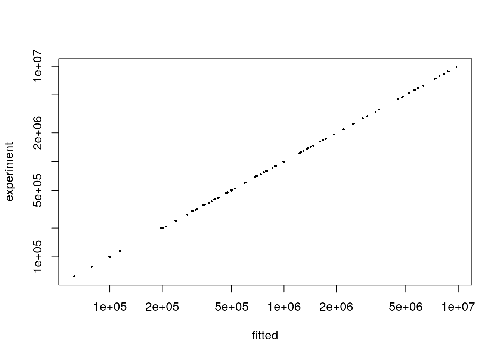

library(pulseR)##
## Attaching package: 'pulseR'## The following object is masked from 'package:stats':
##
## profileattach(pulseRSpikeinsData)Let us have a labelling experiment with several time points
formulas <- MeanFormulas(
A = a,
B = a * b ^ time,
C = alpha * a * (1 - b ^ time))
formulaIndexes <- list(
A_fraction = 'A',
B_fraction = c('B', 'C'),
C_fraction = c('B', 'C'))Let \(alpha\) be some parameter shared between genes and \(a\), \(b\) are the gene specific parameters.
Here is the condition matrix for our data set:
conditions## condition time
## sample_1 A_fraction 1
## sample_2 A_fraction 2
## sample_3 A_fraction 3
## sample_4 B_fraction 1
## sample_5 B_fraction 2
## sample_6 B_fraction 3
## sample_7 C_fraction 1
## sample_8 C_fraction 2
## sample_9 C_fraction 3
## sample_10 A_fraction 1
## sample_11 A_fraction 2
## sample_12 A_fraction 3
## sample_13 B_fraction 1
## sample_14 B_fraction 2
## sample_15 B_fraction 3
## sample_16 C_fraction 1
## sample_17 C_fraction 2
## sample_18 C_fraction 3
## sample_19 A_fraction 1
## sample_20 A_fraction 2
## sample_21 A_fraction 3
## sample_22 B_fraction 1
## sample_23 B_fraction 2
## sample_24 B_fraction 3
## sample_25 C_fraction 1
## sample_26 C_fraction 2
## sample_27 C_fraction 3The count matrix consists of the read counts for genes as well as counts for the spike-ins, which are specified by row names.
counts[,1:4]## A_fraction A_fraction A_fraction B_fraction
## 100132 99843 100614 113697
## 200949 199742 200436 352575
## 299947 299812 301966 472647
## 402735 397831 399445 346593
## 503675 503351 500446 704088
## 597328 601121 601301 682842
## 697147 703352 698191 775520
## 797871 798010 798683 1477658
## 899497 898192 901346 1727296
## 1000624 998589 994578 1665592
## spikes 1 2437 2569 2379 4904
## spikes 2 5540 5379 5411 11085
## spikes 3 5252 5366 5434 11063
## spikes 4 9967 9900 9958 19983
## spikes 5 5555 5453 5520 11073
## spikes 6 6856 6851 6831 13617
## spikes 7 1329 1408 1333 2656
## spikes 8 240 248 256 502
## spikes 9 3271 3234 3174 6325
## spikes 10 2703 2814 2625 5432
## spikes 11 2599 2475 2490 226
## spikes 12 5357 5416 5384 521
## spikes 13 5486 5212 5306 535
## spikes 14 10137 9873 9939 968
## spikes 15 5457 5714 5439 544
## spikes 16 6922 6760 6864 695
## spikes 17 1455 1359 1412 143
## spikes 18 260 242 229 31
## spikes 19 3195 3205 3170 295
## spikes 20 2867 2688 2695 261Since usually it is interesting to consider cross-contamination between labelled and unlabelled fractions, we need to specify spike-ins sets for these fractions. For example, the samples from the group “B_samp” are contaminated with the “C” fraction (e.g. labelled and unlabelled). Hence, we need to provide to lists of spike-ins for the “B_fraction” samples: for the “B” fraction and for the “C” fraction.
spikeins$spikeLists$B_fraction## [[1]]
## [1] "spikes 1" "spikes 2" "spikes 3" "spikes 4" "spikes 5"
## [6] "spikes 6" "spikes 7" "spikes 8" "spikes 9" "spikes 10"
##
## [[2]]
## [1] "spikes 11" "spikes 12" "spikes 13" "spikes 14" "spikes 15"
## [6] "spikes 16" "spikes 17" "spikes 18" "spikes 19" "spikes 20"It is very important to specify the reference group of samples, which will be used for estimation of sequencing depth correction (normally, it is the total fraction).
spikeins$refGroup## [1] "A_fraction"PulseData objectpd <- PulseData(
counts = counts,
conditions = conditions,
formulas = formulas,
formulaIndexes = formulaIndexes,
spikeins = spikeins
)Now we set options for fitting. It is important to provide boundaries for the optimal parameter search:
opts <- setBoundaries(list(
a = c(.1, 1e6),
b = c(.01, .99),
alpha = c(.1,10)
))For other possible parameters please see “set” functions in the package documentation (setBoundaries, setTolerance, setFittingOptions).
Optimisation procedure may depend on the initial parameter values. A function initParams provides an interface to simplify this step. There are two options for how to set the parameters:
initPars <- initParameters(par = par,
geneParams = c("a", "b"),
pulseData = pd,
options = opts)One can specify other options like relative error tolerance thresholds for parameter fitting. The fitting procedure will stop, once the difference in parameters values between two subsequent iteration is less than specified in options$tolerance. For more details, see documentation for the functions setTolerance and setFittingOptions.
The function fitModel accepts a PulseData object, an initial guess for the parameters values and fitting options.
opts <- setTolerance(params = 1e-3,
normFactors = 1e-2,
options = opts)
result <- fitModel(pd, initPars, opts)The fitted result is a list of fitted parameter values as well as fixed parameters, if they were specified.
One may compare estimations for mean read numbers derived from the fitted parameters with the raw data (simulated counts in our case):
pr <- predictExpression(result, pd)
plot(
x = as.vector(pr$predictions),
y = as.vector(pd$counts),
pch = 16,
cex = .3,
log = 'xy',
xlab = "fitted",
ylab = "experiment"
)
sessionInfo()## R version 3.4.0 (2017-04-21)
## Platform: x86_64-pc-linux-gnu (64-bit)
## Running under: Ubuntu 14.04.5 LTS
##
## Matrix products: default
## BLAS: /usr/lib/openblas-base/libblas.so.3
## LAPACK: /usr/lib/lapack/liblapack.so.3.0
##
## locale:
## [1] LC_CTYPE=en_US.UTF-8 LC_NUMERIC=C
## [3] LC_TIME=en_US.UTF-8 LC_COLLATE=en_US.UTF-8
## [5] LC_MONETARY=en_US.UTF-8 LC_MESSAGES=en_US.UTF-8
## [7] LC_PAPER=en_US.UTF-8 LC_NAME=C
## [9] LC_ADDRESS=C LC_TELEPHONE=C
## [11] LC_MEASUREMENT=en_US.UTF-8 LC_IDENTIFICATION=C
##
## attached base packages:
## [1] stats graphics grDevices utils datasets methods base
##
## other attached packages:
## [1] pulseR_0.0.2
##
## loaded via a namespace (and not attached):
## [1] compiler_3.4.0 backports_1.0.5 magrittr_1.5 rprojroot_1.2
## [5] tools_3.4.0 htmltools_0.3.6 yaml_2.1.14 Rcpp_0.12.11
## [9] codetools_0.2-15 stringi_1.1.5 rmarkdown_1.6 knitr_1.16
## [13] stringr_1.2.0 digest_0.6.12 evaluate_0.10.1